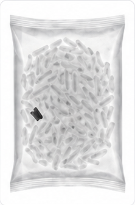
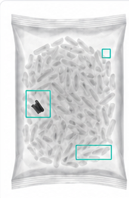
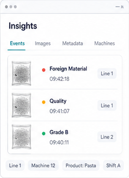
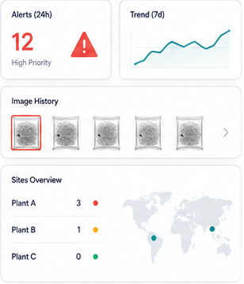
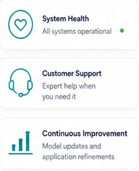
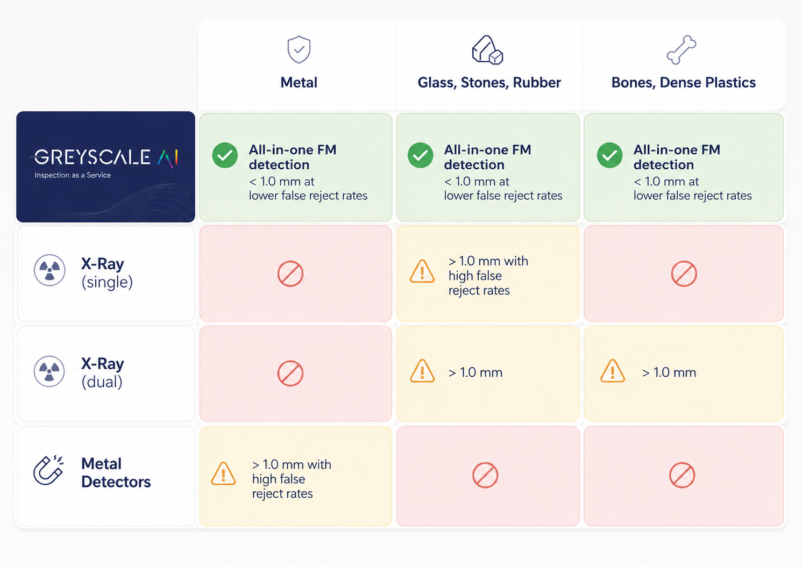

1
Inspect
Capture product images at line speed.

Platform overview
GreyscaleAI connects standard HRX inspection systems, AI image analysis, GreyscaleAI Insights, machine monitoring, and managed support into one product platform for production teams.
Inspection system
The HRX machine captures X-ray images as product moves across the conveyor. The X-ray source, detector, and onboard computer create the image evidence GreyscaleAI uses for AI analysis, event review, and reject decisions.
Operational insight
GreyscaleAI starts with high-resolution X-ray inspection at line speed, then turns each image into useful production intelligence. AI image analysis evaluates product-specific signals, Insights makes events and trends visible to authorized users, and the support layer helps keep the system monitored, supported, and improving.
Capture product images at line speed.

Use AI to evaluate foreign material, quality, grading, and product-specific signals.

Store images, events, metadata, and machine context in Insights.

Surface meaningful alerts, trends, image history, and multi-plant visibility.

Monitor system health, support the customer, and improve the application over time.

Inspect layer
GreyscaleAI inspection systems are built for food production environments where product format, packaging, line speed, and contaminant risk all matter.


Analyze layer
AI models classify defects, measure density and shape, count missing components, and identify quality bands. These signals feed into grading, checkweighing, and analytics.
Insights application layer
Reject trends
View rejects by shift, SKU, or line.
Image history
Event images
Filter
Alert feed
The goal is to keep the inspection system useful after installation, not just deliver another machine for the plant team to manage.